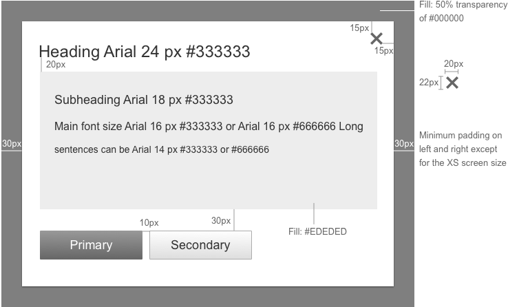
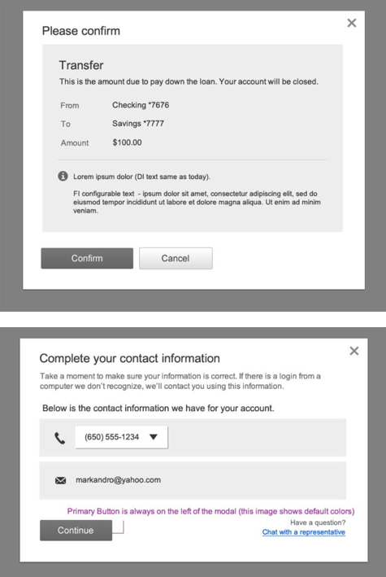

Modal
Visual Specifications
Modals are used when the user must confirm/take an important action, and cannot proceed until that action has been taken. Try to use modals sparingly in the design, and not when the user must take multiple steps. It is preferable to use a full page in place of a modal at the XS screen size, as modals can cause scrolling issues on mobile devices.
The modal is vertically centered in the viewport and is anchored 20px below the top of the viewport.
The minimum width is 550px in the large, medium and small screen sizes.
The modal is full-page at the XS screen size.

| Screen size | Default Padding |
| Large | 30 px, 30px, 40px, 30px |
| Medium | 30 px, 30px, 40px, 30px |
| Small | 20 px, 20px, 30px, 20px |
Examples

Accessibility
- Modals: On close, return focus to the element that activated the overlay.
- Close buttons: Images that function as a button (such as an image of an “X” to represent “Close”) must include a text equivalent. If the text equivalent is hidden from view, it must remain available for assistive technology (e.g. using text-indent to move it off screen). If it’s an img element acting as a button, it also needs an ARIA role.
- All WAI-ARIA enabled dialog boxes should be modal. A modal dialog prevents the user from setting the focus outside of the dialog until the dialog is closed. Mouse clicks outside of the dialog must be ignored, and the user must not be able to tab into or out of the dialog itself.
- All images must have an alt attribute (even if the function of the image is purely decorative and alt=“”). When an image has meaning to a sighted user, convey this with the alt attribute if possible. Avoid images that contain text; if they do, the alt value must contain the same string of text.
- Indicate: Focus; the easiest way to achieve this is to not remove default styling for the outline property.